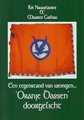
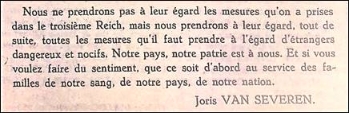

> nieuwsbrief > 2018 - nr 2
Inhoud
Hernieuwen
ledenbijdrage voor 2018
De hernieuwing van de ledenbijdragen voor 2018 verliep
traditiegetrouw vlot. Toetreden kan nog steeds, mits overboeking
van de ledenbijdrage. Even herinneren: de minimumbijdrage blijft
ongewijzigd en bedraagt 29 €. In ruil daarvoor verzekeren we u
de stipte toezending van het nieuwe Jaarboek Joris van Severen
– het 22e al – in de meimaand en van de vier nummers van ons
kwartaalblad Nieuwsbrief
Joris van Severen. Vanaf het bedrag van 35 € boeken we u
met dank als steunend lid. Vereffening graag via onze rekening
IBAN: BE71 0001 7058 1469 – BIC: BPOTBEB1 t.n.v. Studiecentrum
Joris van Severen, Paddevijverstraat 2, 8900 Ieper.
Verderop in deze Nieuwsbrief leest u
alle praktische gegevens met betrekking tot de geplande
herdenkingsmomenten te Brugge en te Abbeville op zaterdag 19 en
zondag 20 mei aanstaande. We roepen vanzelfsprekend op tot
deelname hieraan.
78 JAAR Later
ZATERDAG 19 MEI 2018:
JAARMIS TE BRUGGE
&
ZONDAG 20 MEI 2018:
GROET
AAN HET GRAF TE ABBEVILLE
Jaarmis in de
BLINDEKENSKAPEL TE BRUGGE
Zaterdag 19
mei: 15.00 uur: Plechtige
Gregoriaans gezongen H. Mis met homilie, opgedragen door de E.H.
Roeland Vansteenkiste, in de Blindekenskapel te Brugge ter
nagedachtenis van Joris van Severen, zijn lotgenoten en al onze
overledenen. Aansluitend om 16.00 uur: Receptie, aangeboden door de Stichting Joris van
Severen vzw. De op de herdenkingsmis aansluitende
receptie gaat door in het Hotel
Portinari, gelegen op ’t Zand 15, Brugge.
Groet
aan het graf te Abbeville
Zondag 20
mei: afspraak om 11.30 uur aan de
toegang tot het kerkhof te Abbeville. Aansluitend gezamenlijk
bezoek aan het graf van Joris van Severen en
Herdenking
aan het Bourgoensche Cruyce
Zaterdag 19
mei: 11.00 uur: aan de
toegangspoort tot het Bourgoensche Cruyce, het voormalige
woonhuis van Joris van Severen in de Wollestraat te Brugge
memoreert een gedenkplaat de namen van de vier Brugse
slachtoffers van het Bloedbad
van Abbeville. Sinds enkele jaren wordt daar door het
Brugse Abbeville Comité jaarlijks
een korte herdenkingsplechtigheid gehouden rond de datum van 20
mei. Dit jaar valt die plechtigheid op dezelfde datum als deze
van de herdenkingsmis in de Blindekenskapel, Kreupelenstraat
(zijstraat van de Smedenstraat) met volgend stramien:
welkomstwoord, In Memoriam voor de vier Bruggelingen,
bloemenhulde, toespraak namens het Brugse Abbeville Comité,
afscheidswoord, het Gebed
voor het Vaderland, met afsluitend receptie. Wellicht
wordt ook dit jaar voorafgaand aan de plechtigheid in de
Wollestraat een wandeling ingericht langsheen enkele plaatsen
die in het leven van de Brugse Abbeville-slachtoffers een rol
hebben gespeeld. Momenteel zijn de praktische gegevens daarvan
nog niet gekend. Informeer in de week voorafgaand aan 19 mei.
Steun en info
Wenst
u op de hoogte gehouden te worden van de activiteiten van de Stichting
Joris van Severen vzw, dan kunt u zich wenden tot
de voorzitter
Wanneer er over de “wegvoeringen” geschreven wordt,
dan is er één naam die steevast wel vermeld wordt en
dat is die van Joris van Severen. De Verdinaso-leider wordt op
15 mei 1940 samen met 77 andere “verdachten” uit de gevangenis
van Brugge gehaald en in drie bussen geladen om afgevoerd te
worden naar Frankrijk.
Het bonte gezelschap bestond uit verschillende
nationaliteiten (Belgen, Nederlanders, Duitsers, Hongaren,
Italianen, een Canadees …). Onder hen twee Dinaso’s (Van Severen
en zijn rechterhand Jan Ryckoort), twee Rexisten (Léon Degrelle
en René Wéry), één VNV-er (Van Gijsegem) en twee Belgen die voor
de Duitse Abwehr
(contraspionage) werkten. Daarnaast onder meer Belgische
communisten (Caestecker, Monami en Van Dijcke), verschillende
Joden, Italiaanse antifascisten, een onfortuinlijke witloofboer,
een Duitse priester, de dochter, de vrouw en de schoonmoeder van
de (wegens nationaalsocialistische sympathieën gezochte)
Nederlandse ingenieur Ernst Warris en een Canadese
ijshockeytrainer. Bij een tussenstop in Duinkerken wordt
Degrelle voor ondervraging van de bus gehaald. Uiteindelijk
wordt hij in Le Vernet opgesloten. In juli 1940 kon ook hij
terugkeren naar België waar hij in de collaboratie zal treden.
In de avond van 19 mei bereikten de bussen het Franse
stadje Abbeville. Omdat er geen plaats meer was in de overvolle
gevangenis werden de gevangenen opgesloten in de ruimte onder de
muziekkiosk. Die nacht begon het Duitse leger Abbeville te
bombarderen en de Franse gendarmes (het waren militairen, geen
gendarmes – nvdr), aan wie de gevangenen waren toevertrouwd,
vreesden dat het oprukkende Duitse leger de gevangenen zou
bevrijden. De volgende middag, op 20 mei 1940, werd besloten om
de gevangenen te executeren. Tussen de bombardementen door
werden ze in groepjes van vier uit de kiosk gehaald en zonder
proces doodgeschoten. Uiteindelijk zal een Franse luitenant
arriveren die de moordpartij laat stopzetten, maar tegen die
tijd waren er al 21 personen van 6 verschillende nationaliteiten
geëxecuteerd. Onder de doden Van Severen en Ryckoort, de Rexist
Wéry, de communisten Caestecker en Monami, verschillende
Italiaanse antifascisten en Maria Ceuterick, de 60-jarige
schoonmoeder van Ernst Warris.
De overlevenden werden door Franse soldaten dieper
Frankrijk ingevoerd, later zullen ze naar België kunnen
terugkeren. Enkele uren daarna viel Abbeville in Duitse handen.
“Het Bloedbad” genoot ruime interesse van de Duitsers die ook
een paar agenten waren kwijt geraakt en die de lijken
onmiddellijk fotografeerden. “Het Bloedbad van Abbeville” werd,
net als de “wegvoeringen”, tijdens WO II reeds herdacht, onder
meer door de Rexisten. Maar ook vandaag nog zorgt “Abbeville”
voor consternatie. Zo ontstond er commotie rond de herdenking
van de vier Brugse slachtoffers: de Dinaso’s Van Severen en
Ryckoort, grootmoeder Ceuterick en de communist Monami. Monami
en Ceuterick kregen in 1978 eerherstel van de Belgische staat,
de twee Dinaso’s niet. Omdat de vier Bruggelingen niet op de
officiële Brugse gedenksteen staan voor oorlogsslachtoffers
(omdat ze niet door Duitse maar door Franse soldaten gedood
werden) richtte het Brugse Abbeville Comité een
aparte gedenksteen op voor de vier Bruggelingen bij het
voormalige huis van Joris van Severen. Dat comité dat momenteel
getrokken wordt door enkele Brugse N-VA’ers werkt wel eens samen
met de extreemrechtse Stichting
Joris van Severen, die een jaarlijkse herdenking houdt in
Abbeville. De voorzitter van de Stichting, Luc Seynaeve, is
overigens lid van het Abbeville
Comité. Wanneer Justitieminister Stefaan Declerck
(CD&V) in mei vorig jaar (2011- nvdr) een vertegenwoordiger
stuurt naar de Brugse herdenking, zorgt dat voor ophef in de
Waalse pers. Want hoewel iedereen het er over eens is dat de
executies schandalig waren, begrijpt niet iedereen waarom
uitgerekend Joris van Severen officieel door Belgische politici
herdacht moet worden. En zo gaat de geschiedenis verder.
_________________
Bron: http://www.alertmagazine.nl/?p=814
(‘Alert’-vakblad door en voor antifascisten).
Luc Delafortrie
Het
stoort ons in de tv-uitzendingen over de collaboratie, dat de
gebeurtenissen worden beoordeeld met de geestesgesteldheid van
vandaag en dat. zodoende het historisch perspectief teniet wordt
gedaan. Wat hebben de mensen van toen gedaan? En waarom hebben
zij het gedaan?
Het is
duidelijk dat bíj de aanvang van de Duitse bezetting, allen die
begaan waren met het lot van onze bevolking, iedereen dus, de
vraag stelden wat er gedaan moest worden om de bevolking te
besturen, en voor haar bevoorrading te zorgen, kortom haar
richting te geven in de verwarring van het ogenblik. Dat diverse
mogelijkheden moesten worden onderzocht, kan alleen betwist
worden door een kwaadwillige of een mentaal geborneerde.
Hierin
ligt vooral de zwakheid van de tv-uitzendingen, die technisch
gezien goed zijn samengesteld, die een spannende en
sensatierijke show brengen, maar die al te veel aan dit aspect
hebben geofferd.
Nadat
de collaborateurs in de repressie zijn gestraft, wat dikwijls op
onrechtvaardige wijze gebeurde, worden ze nu in de tv-show
opnieuw voor de rechter gebracht en gevonnist. Zij worden ter
verantwoording geroepen voor daden die zij al lang hebben
beleden en waarvoor zij al lang hebben geboet.
Het
onderzoek van wat tijdens de oorlog is voorgevallen is nuttig,
maar dient sereen te gebeuren, terwijl men de toenmalige
toestanden in hun tijd moet kunnen zien en begrijpen. Zo niet
oordeelt men niet rechtvaardig. Daar moet aan toegevoegd worden
dat de inkleding van de show, met militaire muziek en het
telkens uitstallen van Duitse uniformen en van het hakenkruis,
beledigend is voor hen die worden ondervraagd.
De
oppervlakkige en naïeve kijker meent dat al wat op het scherm
verschijnt onder de gemene deler van de collaboratie dient te
worden geplaatst. Voor hem is het één pot nat. Dat geldt voor
hen die bereid waren de ondervragingen te ondergaan en er
eerlijk op antwoorden. Maar het geldt nog veel maar voor hen die
er niet meer bij zijn en zich niet kunnen verantwoorden.
In een
eerste reeks uitzendingen werd getracht uit te leggen hoe de
collaboratie mogelijk is geweest en in welke geest zij is
ontstaan. Alsof allen die met de Duitsers hebben samengewerkt
daar reeds vóór de oorlog op werden voorbereid. Hier treft
opnieuw de afwezigheid van een historische achtergrond. Er wordt
een allegaartje gemaakt van alle strekkingen en bewegingen onder
de hoed van de ”nieuwe orde". Net alsof zij die naar
hervormingen streefden, naar een nieuwe orde, daarom van meet af
aan voorbestemd waren om de “Neuordnung" van de Duitsers te
aanvaarden, ja, het eigen land te vergeten omwille van de
Duitsers. Ook dat is onrechtvaardig en onjuist. Het treft ons
vooral in de voorstelling van Joris van Severen. In de
uitzendingen en de begeleidende boeken wordt Van Severen
afgebeeld, samen met anderen die werkelijk collaboreerden, en
samen met hakenkruisen en SS-uniformen. Is het omdat de
volgelingen van Joris van Severen een uniform droegen? Dat deden
de KSA en de Rode Valken toch ook!
Het
vermengen van de uniformen schept een vals beeld. De kijker
krijgt de indruk dat Joris van Severen een voorbereider van de
collaboratie is geweest. Hierbij wordt de betekenis van zijn
figuur ver uit het oog verloren.
Joris
van Severen wilde een ”ordening" bouwen op de solidariteit
tussen al de geledingen van de bevolking: het solidarisme.
Daarbij steunde hij op het beginsel dat alles dient gericht te
zijn op de ontwikkeling, de vervolmakíng van de menselijke
persoon. In zijn systeem stond niet de Staat als doel, of het
ras, maar de mens. Daarom wilde hij de ”eenheden” die de
menselijke ontwikkeling bevorderden samenbrengen in een
harmonisch geheel: het gezin. de gemeente, de beroepen, ten
slotte het Staatsorganisme, met aan het hoofd een regering die
werkelijk regeert.
Men
moet hierbij bedenken dan de parlementaire democratie voor de
oorlog in volle crisis verkeerde en er niet in slaagde het
vermelde doel te verwezenlijken. Zonder dit goed te beseffen kan
men de figuur van Joris van Severen niet begrijpen. In zijn
stelsel was er wel degelijk een vertegenwoordiging voorzien van
de georganiseerde natie, die op dat ogenblik niet bestond.
Sindsdien is er veel veranderd, maar wie zal beweren dat nu
alles is zoals het hoort? Joris van Severen deed een beroep op
de persoonlijke verantwoordelijkheid. Hij wilde voorbeeldige
mensen vormen en zag daarin zijn voornaamste taak: mensen in
dienst van de gemeenschap, die eerst zichzelf orde en tucht
opleggen. De Vlamingen vooral misten een dergelijke opleiding en
nochtans ligt daarin de sleutel tot het verwerven van een hoger
bestaan. Voor zijn opvattingen is Joris van Severen de dood
ingegaan en hij deed het op een heldhaftige manier. Joris van
Severen was een man die zeer zelfstandig was en zeer fier op
zijn land en zijn volk. Hij wilde in deze hoek van West-Europa,
steunend op de geschiedenis tot een eendrachtig samengaan komen,
waardoor de bevolking voor vreemde overheersing zou worden
beveiligd. Daartoe achtte hij het nodig dat België, Nederland en
Luxemburg zouden verbonden worden, langs wegen van
geleidelijkheid, met inachtneming van de wettelijkheid. Hij
bewees de wenselijkheid en de noodzakelijkheid van de latere
Benelux. Hij verhief zich boven de kleine partijentwisten en
boven het provincialisme. Hij wilde aan de bewoners van de
Nederlanden het besef geven dat zij samen een eigen
persoonlijkheid bezitten die zij dienen te handhaven en te
ontwikkelen, in zelfstandigheid. Nu is het bewezen dat de
Duitsers van een éénmaking van de Nederlanden niet wilden weten,
ja. ze verder wilden verbrokkelen, Zij wilden de Nederlanden hun
eigen gestalte ontnemen. Dat is ook in de uitzendingen
zonneklaar gebleken.
Hoe
kan men dan de figuur van Joris van Severen verbinden met de
voorbereiding tot collaboratie? Collaboreren om zijn eigen doel
onmogelijk te maken? Dai is een van de grofste misgrepen van de
tv-uitzendingen. waardoor ze een historische visie missen.
“Dinaso" en “NSB”
“Er 'bestaat een Belgisch blad Hier Dinaso!, waarvan
het nr. van 2 januari 1937 voor me ligt (5e jg. nr. 5). Geest en
bedoeling van het orgaan laten zich wel kennen uit volgende
passages:
Bij het
huwelijk van Princes Juliana en Prins Bernhard, 7 januari 1937.
Aan Koningin Wilhelmina bieden we onze gelukwensen aan bij het
huwelijk van Princes Juliana. Aan Princes Juliana en Prins
Bernhard bieden wij onze gelukwensen aan bij hun huwelijk.
Wij betuigen aan het Huis van Oranje bij
deze gebeurtenis onze heilwensen al betreuren wij, dat dit
Koningshuis de laatste honderd jaren niets deed om de eenheid
van het Dietse Volk en van de Nederlanden te herstellen.
Wij weten, dat een machtig deel van de
schuld aan deze nalatigheid ligt bij de leiders der democratie,
die de Vorstenhuizen het bestuur ontroofden en deze verlaagden
tot dekmantel van de wandaden der democratie.
Wij bieden onze gelukwensen in de hoop, dat Oranje de lang verwaarloosde en door het Verdinaso hervonden en gevoerde politiek van de Vader des Vaderlands, waar mogelijk,
uit alle kracht zal steunen. Het is de politiek van het verenigde Dietse Volk, de Verenigde Nederlanden, de politiek van Gezag, Rechtvaardigheid en Orde.
Joris van Severen,
Leider van het Verdinaso.
Ernst
Voorhoeve,
Organisatieleider voor
Rijksnederland.
Alsmede door wat hieronder volgt (uit
een artikel van Joris van Severen): “Met dit te velde
verschijnen van het Verdinaso werden ineens de oplossingen voor
de grote vraagstukken die het leven van het Dietse volk
beheersen, in hun grondige wezenlijkheid en met een niets en
niemand ontziende beslistheid verkondigd; de Dietse volksstaat
gebouwd op de organisch-solidaristische orde; oplossingen die in
het jaar 1934 tot hun volkomenheid werden doorgevoerd; het
Dietse Rijk gegrondvest op de organisch-solidaristische orde;
het Rijk der Nederlanden omsluitende op die grondslag, in een
hiërarchische verbondenheid: de Dietsers, de Friezen, de Walen
en de Luxemburgers.
En niet alleen werden die oplossingen
verkondigd; maar zij werden te midden van het volk gedragen, in
de Noordelijke zowel als in de Zuidelijke Nederlanden door een
politieke strijdorganisatie wier moed en dapperheid, wier
innerlijke kracht en tucht in de Nederlanden nooit te zien
geweest waren.
Geen wonder dan ook, integendeel!, dat
al de machten die verscheurdheid van de Dietse volksgemeenschap
en van de Nederlanden willen bestendigen, en al de machten die
in de Nederlanden het liberalistisch, democratisch, marxistisch
systeem willen behouden of bevorderen tegen de Verdinaso de kamp
aanbonden met al de middelen van het geweld, van den lengen en
van de laagheid.”
Zoals men bijna begrijpt, betekent Verdinaso; “Verbond
van Dietse Nationaal-Solidaristen''. Ook in dit verbond wordt
“bevolen”:
Berichten van de Leiding van het
Verdinaso
In de hoop, dat de Vorstenhuizen,
regerende over de gebieden, die tezamen de Nederlanden vormen,
zullen voeren: de enig heilzame politiek der Verenigde Nederlanden,
viert het Verdinaso de voor die Vorstenhuizen belangrijke
gebeurtenissen.
Ik beveel daarom dat alle
Dinaso’s in Nederland en in België op 7 Januari 1937, de
huwelijksdag van Princes Juliana, gedurende de gehele dag
zullen vlaggen
met de (officiële) Dinaso-vlag en/of de Oranje-wit- blauwe
vlag.
De Leider van het Verdinaso,
Joris
van Severen
[….]
In dit orgaan is men niet al te best te
spreken over de Nederlandse nsb. Nadat herinnerd is
aan mijn brochure: Geen
Duimbreed! wordt opgemerkt: “Hierin behandelt de schrijver
de verklaring die Kerkelijke leden van de NSB. tekenen om zich te dekken tegen
mogelijke maatregelen door de Kerken tegen hen te nemen.
De verklaring (“voor Gereformeerden",
voegt het blad er niet ongeestig aan toe) luidt aldus: (Onze)
lezers kennen ze reeds, maar we citeren ze gemakshalve nog
eens):
‘Ondergetekende. ..., wonende te....,
lid der Geref. Kerk aldaar, verklaart bij deze, dat hij niet
voor zijn rekening neemt, wat in officiële of officieuze
geschriften der nsb.
zou voorkomen in strijd met Gods Woord en de Gereformeerde
Belijdenis en dat zijn lidmaatschap der nsb dit ook niet eist
of onderstelt. Tevens verklaart hij, dat zijn belofte als nsb’er hem geen
verplichtingen oplegt, die in strijd zouden zijn met Schrift en
Belijdenis voornoemd en dat, indien dit zou voorkomen, hij zijn
belofte vervallen zou achten. ‘Hij' betuigt het recht van de
Kerkenraad te erkennen, om hem te ondervragen, te onderwijzen en
uitspraak te doen over zijn leer en leven op grond als boven,
waarbij hij zich aan het oordeel van den Kerkenraad belooft te
onderwerpen met behoud van beroep op meerdere vergaderingen.’
Het blad Hier Dinaso! merkt dan
zijnerzijds op: “Zeer terecht vraagt Prof. Schilder (wiens
betoog wij overigens buiten beschouwing laten) aandacht voor
deze merkwaardigheid:
‘Een hypothetisch en onbepaald quantum,
ook van officiële
nsb-papieren, kan men als nsb’er, zonder dat de nsb zelf daartegen
bezwaar heeft, weigeren voor zijn rekening te nemen. Maar als
Geref. nsb.’ers
dit mogen doen, dan hebben binnen het kader der nsb andere leden gelijk
recht. Dan mogen Roomsen een ander onbepaald en hypothetisch
quantum afwijken, en Hervormden weer een ander en desgelijks
Vrijmetselaren. ... en Joden.... en zeer vele anderen.’ Hierna
besluit het blad als volgt:
“De democratie mangelt het aan verantwoordelijkheid.
Als het spannen gaat zijn de verantwoordelijken voor bepaalde
misslagen en tekortkomingen nergens te vinden. Uiteindelijk komt
men terecht bij het parlement. En wat is het parlement? Het volk
zelf immers! Wat heeft het Volk dan rekenschap te vragen aan hen
die haar opperste levensbelangen behartigen moeten. Het heeft
het zelf gewild.”
De nsb klaagt het gebrek
aan verantwoordelijkheid in de democratie bij tijd en wijlen
aan. Edoch: Het staat toe dat in haar midden, officieus en zelfs
officieel,
beginselen verkondigd worden waarvoor de verantwoordelijkheid
niet behoeft te worden genomen.
De ziekte der democratie heeft de nsb nog steeds niet
uitgebannen. Wij voor ons geloven niet, dat de democratie bij de
nsb nog te veel
vertroeteld wordt. Wij geloven alleen maar, dat de organisatie
van de heer Mussert er niet tegen op ziet, ter wille van de
ledenwerving dingen te doen, waarvoor een behoorlijke partij
zich zou wachten. Moge intussen - wat we niet verwachten - het
van deze en dergelijke manipulaties verwachte resultaat
verkregen zijn, dan zal de democratie wel dadelijk ‘uitgebannen’
worden.
Een NSB-dominee
Men weet, dat volgens de nsb de dominees niet
aan politiek mogen doen. Daar is hun taak te “verheven" voor....
Maar de heer Ds van Duyl, om van anderen (b.v. Dr. Boissevain)
nu maar niet te reppen, zijn welkom, als ze maar reclame kunnen
betekenen. Het blad Hier
Dinaso! citeert volgend bericht uit De (Belgische) Standaard d.d. 28 nov.
1936:
“Het hoofdbestuur van de Groep van
Vrijzinnig Godsdienstige in Nederlands-Indië heeft zich tot haar
leden gewend met het voorstel, twee predikanten uit Nederland te
laten komen, waarvoor het met verlof zijnde bestuurslid Dr. H.
Jansen thans moeite doet, evenwel tot heden zonder succes, omdat
er geen vrijzinnige predikanten werden gevonden, die bereid zijn
om naar Indië te gaan. Het bestuur houdt dan ook rekening met
mislukking van het plan."
Hier
Dinaso! knoopt er deze opmerking
aan vast:
“Het hoofdbestuur vergist zich.
Ditzelfde jaar nog ging Ds. van Duyl naar Indië en
hield grote predikaten. Nu was Ds. van Duyl uitgezonden door de
nsb, welke bond
verlangt dat geestelijken zich buiten de politiek houden zullen,
zodat deszelfs werkzaamheid in Indië wel geheel godsdienstig zal
zijn.”
_________________
Bron: De Reformatie, 8 januari 1937. Bijdrage van prof. dr. K.
Schilder (Gereformeerd professor aan de Theologische School
der Gereformeerde Kerken te Kampen). De spelling werd
door de Nieuwsbrief-redactie
aangepast.
Over de Heel-Nederlandse Jeugdbeweging
Voornamelijk het Algemeen Diets Jeugdverbond
(adjv) – en ruimer
de nationale jeugdbeweging in haar brede verscheidenheid na de
Tweede Wereldoorlog – was tot op heden tot tweemaal toe het
thesis-onderwerp van een universitaire studie.
De
eerste studie was deze van Marijke van Hoorebeeck, waarvan in
1986 de boekuitgave verscheen bij de toenmalige Uitgeverij De
Nederlanden en die Oranje Dassen 1944-1961 –
Geschiedenis van het Algemeen Diets Jeugdverbond tot titel kreeg. Zij
studeerde in 1984 af aan de Leuvense universiteit, met Louis Vos
als promotor van haar licentiaatsverhandeling.
De
tweede studie op universitair niveau was deze van Jeroen Belis
die in het academiejaar 2005-2006 aan de Antwerpse universiteit
afstudeerde met zijn licentiaatsthesis De
Vlaams-nationalistische jeugdbewegingen voor en na de Tweede
Wereldoorlog - Doorstart of nieuw begin? En waarvan de
professoren Herman van Goethem en Frans-Jos Verdoodt de
promotoren waren.
Al bij
het verschijnen van de boekuitgave van Marijke van Hoorebeecks Oranje Dassen werd
menig voorbehoud geformuleerd, vooral dan vanuit de Antwerpse
scene die wat de destijdse medespelers betrof al teveel buiten
beeld gebleven was.
Bleef
de controverse wat Van Hoorebeeck betreft destijds voornamelijk
beperkt tot een te eenzijdige raadpleging van haar
woordvoerders, dan gaat deze met betrekking tot de studie van
Jeroen Belis wezenlijk dieper voor wat zijn besluitvorming
betreft, namelijk dat de naoorlogse nationale jeugdbeweging
veeleer een “doorstart” dan wel een “nieuw begin” betrof. Het
auteurs-duo dat in deze uitgave – die ‘Oranje Dassen’
doorgelicht tot titel kreeg - aan het woord komt
behoorde tot de geëngageerde medespelers van destijds binnen het
toenmalige speelveld. Hun overwegingen en bedenkingen bij de
lectuur van beide universitaire scripties berusten op hun
proefondervindelijke ervaringen omtrent de toenmalige
ontwikkelingen binnen de jeugdbeweging. Beide thesissen kunnen
ze daardoor slechtst als dusdanig – namelijk: “stellingen” –
zien, die in heel wat nood hebben aan tegenstellingen of
antitheses. Rik Nauwelaerts nam het op zich om in een eerste
hoofdstuk ‘Oranje Dassen’
van Marijke van Hoorebeeck kritisch te benaderen. Zijn
bevindingen zijn heel wat van vlakken verhelderend en dragen
ertoe bij tal van aspecten uit te diepen en breder te
verduidelijken. Maurits Cailliau weet in het tweede hoofdstuk
heel wat in het werkstuk van Jeroen Belis te waarderen, maar
weerspreekt resoluut diens doorstart-these en brengt tal van
gegevens aan die veeleer pleiten voor een nieuwe aanvang – dan
wel “nieuwe wijn in oude zakken” voorop te stellen.
Deze
nieuwe uitgave – waarvan de vendelvlag van het Antwerpse Herman van den Reeck-vendel
de voorkaft siert - telt 144 pagina’s en is ruim geïllustreerd
met zowel kleur- als zwart-wit afbeeldingen. De aankoopprijs is
20 € (verzendkosten inbegrepen), met de vermelding ‘Oranje
Dassen doorgelicht’ over te boeken op rekening IBAN: BE74 0001
5866 3607 t.n.v. Stuurgroep Oud-adjv, Paddevijverstraat
2, 8900 Ieper.
Het
nieuwe boek is een uitgave van de Stuurgroep Oud-adjv die ook het
kwartaalschrift adjv-Schriften
publiceert. Wie minimaal 40 € overboekt krijgt naast onze nieuwe
boekuitgave meteen ook de adjv-Schriften
van 2018 aan.
“Naar aanleiding van de
bijdrage ‘De Gemeenschap’ in de recente Nieuwsbrief wou ik u
toch het volgende mededelen:
Ik verbleef van 1948 tot
1959 in Ierland, als kind van mijn vader-banneling. Eén van de
circa 20 andere Vlamingen was Albert Luykx, (een Limburger).
Na enkele bezoeken van
pater Amandus Dumon, vriend van Dom Van Assche (Steenbrugge)
kwam een pater Bonifacius Luykx ons in Ierland bezoeken en er,
voor de Vlamingen een mis opdragen.
Dit moet in 1949 of
enkele jaren daarna geweest zijn. Het was wellicht dezelfde
pater Bonifaas O. Praem als de pater van ‘De Gemeenschap...’?”
Aleidis Dierick- Verbruggen, Aalst
__________________
N.v.d. Nieuwsbrief-redactie:
het was inderdaad dezelfde Bonifacius. Albert Luykx was zijn
jongste broer. De historicus Theo Luykx was ook een broer.
Omtrent de lotgevallen van Albert, oud-oostfronter, na WO.II
zie: Robert Houthaeve, Vlamingen
in Ierland, Uitg. Hochepied, Izegem, 1989.
Renaat Schoonjans (Sint Agatha
Berchem 16 maart 1925 – Itterbeek 17 november 2017). Renaat
stamde uit het Jong-Dinaso en werd tijdens WO.II schaarleider
binnen de nsjv en
later zeer actief in het volks-dansmilieu. Hij bekwaamde zich
later tot reisleider, die velen liet kennismaken met de mooiste
plekken van Europa. Bron: Berkenkruisje, 32e jg.,
nr. 1/2018.
Marcel Dutoit (Kortrijk 10 mei
1929 – Kortrijk 18 november 2017). Ook Marcel stamde uit het
Jong-Dinaso en zette zijn jeugdig engagement tijdens WO.II
verder in de nsjv, waar
hij in de septemberdagen van 1944 ingelijfd werd bij het
Jeugdbataljon van de Langemarck. Bron: Berken-kruisje, 32e
jg., nr. 2/2018.
Simone Cleeren (Tervuren 1 maart 1920 – Gent
23 februari 2018), weduwe van Clem Vanfraechem, was vanaf de
aanvang, ondanks haar hoge leeftijd, lid van het Studiecentrum
Joris van Severen.
In deze rubriek verwijzen we zonder veel commentaar
naar recente publicaties waarin Joris van Severen en/of het
Verdinaso vermeld worden. We citeren de meest treffende
passussen woordelijk zonder daarin volledigheid na te streven.
We verzoeken onze lezers, met ons, uit te zien naar
publicaties die voor deze rubriek 'stof' kunnen leveren en ons
kopie van de betreffende passages toe te sturen.
Omtrent
Pyke Koch
“(…) In de jaren dertig kwam daar
een inspirerend contact bij met Ernst Voorhoeve, een oom van
Kochs vrouw, die de leider in Nederland was van de
rechts-nationalistische beweging Verdinaso. In zijn
cultuuropvatting een aanhanger van de pessimistische
geschiedfilosoof Oswald Spengler, en antidemocratisch en
anticommunistisch in zijn politieke overtuiging, zag Koch in het
fascisme dat door de Italiaanse dictator Benito Mussolini met
zoveel elan werd uitgedragen, een toekomst voor het Oude Europa.
(…). In november 1940 werden de leden van Verdinaso en dus
ook Koch opgenomen in de NSB (waartegen ze zich in de jaren
dertig hadden verzet). (…)”
____________
Bron:
http://resources.huygens.knaw.nl/bwn1880-2000/lemmata/bwn6/koch
PS: In het Jaarboek Joris van Severen
22 (2018) wijdt Pieter Jan Verstraete een biografisch
opstel aan deze kunstenaar.
Over
het instampen van open deuren gesproken!
“Ook aan het IJzerfront wist iedereen dat in Rusland
een revolutie was uitgebroken en de tsaar zijn boeltje had mogen
pakken. Het was voor ‘gewone’ soldaten en burgers dus mogelijk
en denkbaar om hun lot in eigen handen te nemen, om die al zo
lang aanslepende oorlog niet langer lijdzaam te hoeven
ondergaan.
Tot grote onrust bij de veiligheidsdiensten vonden
veel Belgische soldaten de revolutie een gelukkige gebeurtenis,
of toch op zijn minst ‘een vooruitgang’. Onderofficier Joris van
Severen, die als Verdinaso-leider de geschiedenis zou ingaan als
een reactionaire antidemocraat, voelde zich bij het uitbreken
van de revolutie ‘zat van geluk’. De eerste jaren na de Eerste
Wereldoorlog bleef hij overtuigd van de nood aan een sociale
revolutie en nieuwe samenleving naar bolsjewistisch model.”
__________________
Bron: Marc Reynebeau in De Standaard, 3-4
november 2017, pp. 30-31.
Uit
het blijkbaar onuitputtelijke vaatje
_________________
Bron: http://www.knack.be/nieuws/belgie/bart-de-wever-kan-het-verleden-van-zijn-stad-zijn-partij-en-de-vlaamse-ontvoogdingsstrijd-zuiveren/article-opinion-959445.html.
Auteur: ene Marcel Sel, Brusselse
schrijver, die nalaat te vermelden dat het Verdinaso in 1940 van
het politieke toneel verdween – en aan wie we hoogdringend de
lectuur van onze brochure Antisemitisme und kein Ende? aanbe-velen.
Joris
van Severen in Pays-Bas
Belgiques, maart-april 1940

Nvdr: Met “niet dezelfde maatregelen
nemen als in het Derde Rijk” alludeerde Joris van Severen niet
naar de concentratiekampen. Hij bleek immers al niet te spreken
over de behandeling van de Joden vóór de oprichting van
Auschwitz, dat eerst in mei ‘40 tot stand kwam. Over de breed
gedragen toenmalige tijds-geest ten aanzien van de rol van de
Joden, handelt de hoger vermelde brochure.